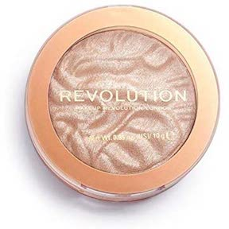
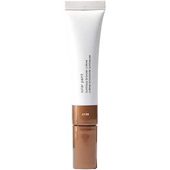
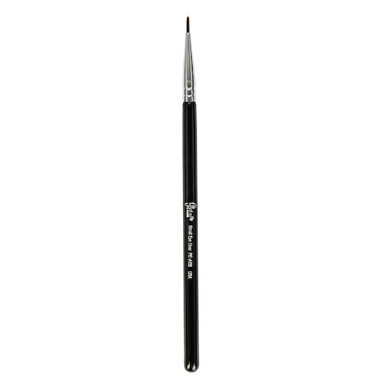

The makeup I use!
What I like to use to get ready!
First here are my products and steps:
- First I like to use the Glossier Skin tint in shade G9

- Next, I use the Urban Decay Concealer in shade 20NY

- Next, I use the Nars Bronzer in shade Laguna

- Next, I use the Rose Inc blush in shade Ophelia

- Next, I use the Revolution Highlighter in shade Dare to Divulge on my cheeks

- Next, I use the Glossier Solar Paint in shade Heat on my cheeks with a small brush to make freckles. After I place the small dots on my face I pat them around my face

- Here is a brush similar to what I use
